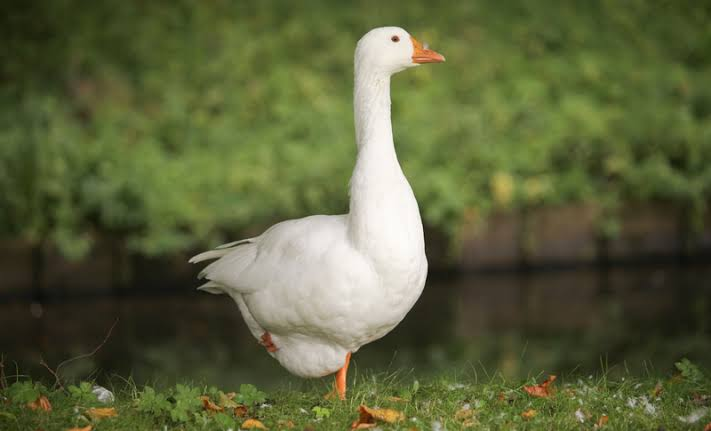

Goose
Birds
A goose is a bird of any of several waterfowl species in the family Anatidae. This group comprises the genera Anser, Branta, and Chen, the latter being commonly placed within the genus Anser. Some other birds, mostly related to the shelducks, have "goose" as part of their names.
Lifespan: Canada goose: 10 – 24 years
Scientific name: Anserini
Mass: Canada goose: 3.2 – 6.5 kg
Clutch size: Canada goose: 2 – 9, Swan goose: 5 – 6
Length: Canada goose: 75 – 110 cm, Swan goose: 81 – 94 cm
Wingspan: Canada goose: 1.3 – 1.8 m, Swan goose: 1.6 – 1.8 m
The sexes are alike in coloration, though males (ganders) usually are larger than females (hens). The neck is always shorter than the body.
The bill is humped at the base and tapered toward the tip; the plates of the bill are adapted for grasping the sedges and grasses upon which geese feed. The legs are farther forward than in swans and ducks, allowing the bird to walk readily.
Both sexes utter loud honking or gabbling cries while on the wing or when danger appears. When angry, geese vibrate their neck feathers; after routing an intruder, the gander utters a triumphant note that is echoed by his mate and young goslings.
Wild geese pair for life and associate in flocks called gaggles. Simple nests are built on the ground. The rough-surfaced, whitish eggs are incubated for about a month by the hen while the gander stands guard.
The downy young fend for themselves almost at once but remain with their parents during the first summer. Geese may survive for 10–15 years in the wild and more than 30 years in captivity.
These migratory birds winter in limited localities far south of their breeding grounds, although Canada geese have become year-round residents of some areas of southern Canada and northern parts of the continental United States.
In migration they are greeted everywhere as harbingers of the changing seasons. Powerful and high-flying, they travel in V-formations to conserve energy by taking advantage of air currents (vortices) created by the wing tips.